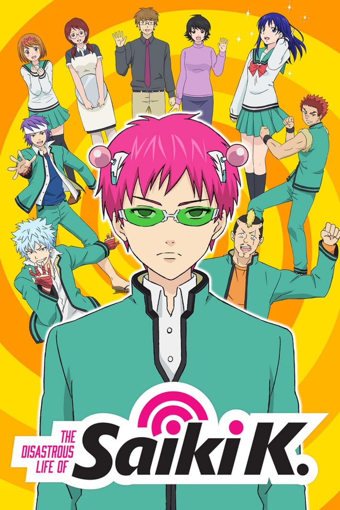
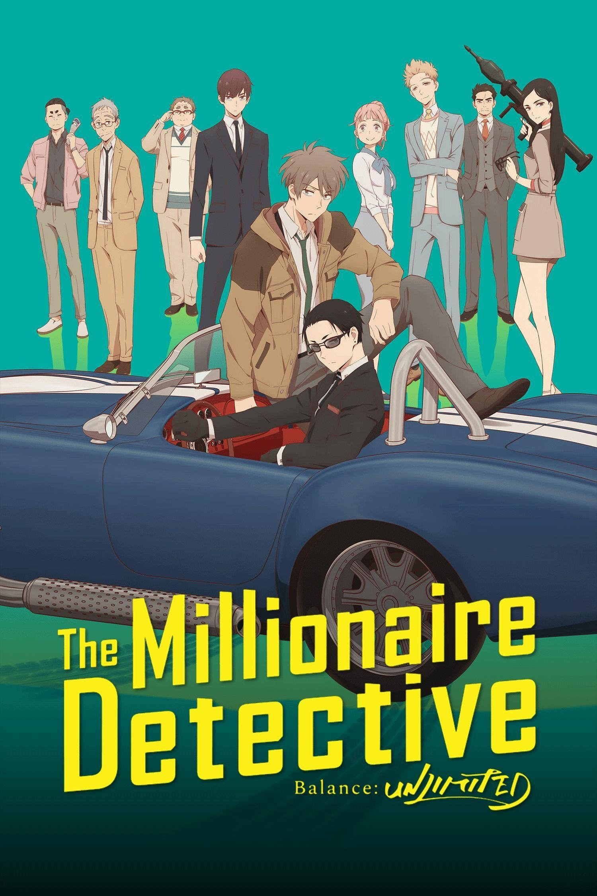

Hey 👋 I'm Toffee
I’m a self-taught developer passionate about building web applications.
About Me
I specialize in front-end development, user experience, and digital minimalism. Currently exploring web performance and privacy-respecting technologies.
Skills
Toolbox
I mostly work with lightweight, privacy-respecting tools and minimal setups. Here are a few I use regularly:
Principles
- 💡 Minimalism over complexity
- 🧠 Learn by building
- 🔒 Privacy matters
- 🛠️ Prefer tools I can control
Interests
I enjoy deep storytelling and creative coding experiments. I sometimes draw inspiration from anime, game design, or forgotten tech.
Shows I like:


Presence
No social media. Just this page.